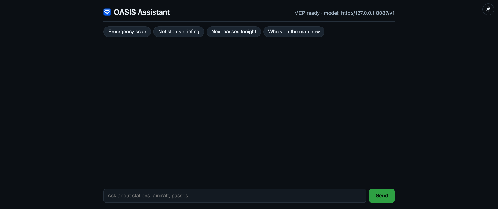

AI Assistant
An offline local-LLM assistant that can read your live station data over MCP

/assistant — a plain chat page over a local model that can read your live station data
The OASIS Assistant at /assistant is a chat page backed
by a local language model that can answer questions about your live
station — “which aircraft are closest?”, “when’s the next
ISS pass?”, “look up W4MHI” — entirely offline. No cloud, no API
key, nothing leaves the Pi.
The assistant is a Pi 5 / 8 GB feature — the model needs the RAM. The page and its MCP tool layer load on any box, but chat answers require the local model daemon to be running.
How it works
The assistant is three cooperating processes, not one. Its most surprising property is that the tool layer contains no API of its own: OASIS already has a REST API, and the assistant’s tools are a thin adapter that re-exposes those same endpoints to the model (the “self-loop”).
| Process | What it is | Endpoint |
|---|---|---|
| Flask host | The OASIS web app and the assistant orchestrator (ai/orchestrator/). Holds the real REST API. | :8083 |
| llama-server | The local LLM (Qwen 2.5 3B), run as the oasis-ai systemd daemon. OpenAI-compatible. | :8087/v1 |
| MCP server | ai.server.mcp_server, spawned by the host as a warm stdio subprocess. Exposes OASIS’s API as MCP tools. | stdio |
A question flows through the loop like this:
Browser (/assistant)
| POST /api/assistant/chat { message }
v
Flask host (:8083) -> loop.py agentic loop, <= 5 tool iterations
| |
| +-- model_client.py --> llama-server :8087 (what to say / which tool)
| +-- mcp_runtime.py --> MCP subprocess (stdio)
| | each tool =
v v
final answer <-------------------------- oasis_get / oasis_post
(streams to page) HTTP self-loop --> OASIS REST API :8083 /api/...
The model is offered the MCP tool list; if it calls a tool, the host forwards it over
stdio to the MCP subprocess, whose tool simply does an HTTP GET back into
OASIS’s own API on localhost and returns the JSON to the model. The loop repeats up
to five iterations, then the answer streams back to the page.
Reads, writes, and the confirm gate
Read tools (heard stations, aircraft, passes, FCC lookup, health) are unrestricted — they only GET. Write tools (start/stop a service, post an APRS warning, monitor a satellite) would change station state, so they are gated: instead of firing, the call is parked and surfaced to you, and nothing happens until you approve it.
| Endpoint / knob | Meaning |
|---|---|
POST /api/assistant/chat | Send a message; the reply streams back. |
GET /api/assistant/health | Reports mcp_ready and whether the model is reachable (drives the status pill). |
POST /api/assistant/confirm | Approve a parked write action so it actually runs. |
actions_enabled (config.json) | Master switch for write tools. |
auto_actions (config.json) | Allow-list of writes permitted without a confirm (empty by default). |
Installing & running
On a Pi 5, install through the setup menu or directly:
python3 ai/runtime/install.py # or setup-oasis.py -> "AI assistant (Pi 5 / 8 GB)"
The installer fetches the llama.cpp arm64 binary and the Qwen 2.5 3B
q4_k_m GGUF model, installs the mcp and httpx
wheels into the OASIS venv, and writes and enables the oasis-ai systemd
unit on 127.0.0.1:8087. It self-gates to Pi 5 /
Linux-arm64 / 8 GB / Python ≥ 3.10 and skips cleanly elsewhere. The
dashboard AI Assistant card can Stop the daemon to
reclaim ~2 GB of RAM and Start it again on demand.
Mac / dev: the prebuilt binary is Linux-arm64. On a Mac,
brew install llama.cpp, run llama-server --jinja -m <qwen…gguf>
--host 127.0.0.1 --port 8087, then ./start.sh and open
localhost:8083/assistant. Without a model the page still loads and
/api/assistant/health reports mcp_ready — only chat needs
the model up.
Troubleshooting
| Symptom | Cause & fix |
|---|---|
Status pill stuck on checking… or shows the model offline |
The oasis-ai daemon isn’t up. sudo systemctl status oasis-ai; start it, or use the dashboard card’s Start. On a Mac, launch llama-server by hand. |
Page loads, health is mcp_ready, but chat never answers |
MCP is fine; the model is not. That split is the whole point of the health check — bring up llama-server on :8087. |
| “AI Assistant” card is grey / missing | Not installed, or the box isn’t a Pi 5 / 8 GB — the installer self-gates. Confirm the hardware, then run ai/runtime/install.py. |
| The model “can’t see” live data | Tool loop trouble. Check the OASIS log for the self-loop HTTP calls; verify the underlying endpoint (e.g. /api/adsb/aircraft) answers on :8083. The MCP layer only relays those. |
| It refuses to start/stop a service or send a warning | Working as designed — writes are gated. Approve the parked action (POST /api/assistant/confirm), or set actions_enabled / auto_actions in ai/config.json. |
| The Pi is thrashing / low on RAM | The model resident set is ~2 GB. Stop the assistant from its dashboard card when you’re not using it to hand the RAM back. |